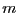
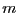
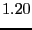

No one should have the impression that people who do molecular simulation only care about the Lennard-Jones fluid. It has been and continues to be an important test-bed for theories of the liquid state and phase-equilibria. Nevertheless, molecular simulation has been performed on a wide variety of materials.
As a single example, consider silicon. Perhaps the earliest attempt to
use molecular simulation to study a realistic atomic-scale model of
silicon was due to Stillinger and Weber [16]. I ``cut
my teeth'' on the Stillinger-Weber potential coding up my first real
research code in graduate school. I now make a version of that code
available to the students in this course, available at
mdswsi.c. This
code computes in reduced units as well;  = 0.20951 nm,
= 0.20951 nm,
 = 2.1678 eV, and  = 28.085 amu, which are appropriate
for a system of pure silicon. One reduced unit of temperature,
, corresponds to 25156.73798 K.
= 2.1678 eV, and  = 28.085 amu, which are appropriate
for a system of pure silicon. One reduced unit of temperature,
, corresponds to 25156.73798 K.
The main reason to introduce Stillinger-Weber silicon here is to give you an example of a three-body potential. Silicon forms 4-coordinated tetrahedral bonded structures. The object of the three-body component of the potential is to enforce the tetrahedral bond angle (109.47) among triplets of bonded atoms.
The total potential is expressed as two sums, one for unique pair interactions, and another for unique triplet interactions:
| (220) |
The two-body models the bonds:
| (221) |
The three body models the angles, and is the sum of functions of each of the three angles of a triplet, :
| (222) |
Here I have employed the shorthand notation
. Note that, in the
notation of this potential, is subtended at  , and
:
, and
:
| (223) |
One computes the angle- term, , and the angle-
term, , and the angle- term, , by permuting the indices appropriately.
term, , by permuting the indices appropriately.
The parameters used in the original study by Stillinger and Weber are:
| (224) | |||
| (225) | |||
| (226) | |||
| (227) | |||
| (228) | |||
| (229) | |||
|  | (230) |
As in any MD simulation, one computes the force on any particle  from the negative gradient of the total potential:
from the negative gradient of the total potential:
| (231) | |||
| (232) |
The two-body term for the  -
- interaction is only slightly more
complicated than Lennard-Jones, due to the smooth cutoff. Here,
assuming
interaction is only slightly more
complicated than Lennard-Jones, due to the smooth cutoff. Here,
assuming  and
and  are within interaction range (), we
have for the force on
are within interaction range (), we
have for the force on  due to
due to  :
:
It is comparatively much more tedious to evaluate the three-body gradients.
Each of the partials in Eq. 241 is unique:
We can investigate what happens when we willfully ignore the three-body terms. Let us initialize atoms on a diamond-cubic lattice (the minimal energy lattice of silicon); a snapshot appears below.
|
% gcc -o mdswsi_no3 mdswsi.c -lm -lgsl % gcc -o mdswsi mdswsi.c -DTHREEBODY -lm -lgslNote also that this code uses the Andersen thermostat by default, with a default value of
% mdswsi -nu 0 -ns 10001 -icf init.xyzturns off the thermostat, which is what I have done for this little demonstration.
Below we plot the instantaneous temperature vs. time-step (0.001
 ) for the two runs. Notice that the system with the 3-body
forces intact remains steady at 0.12, while the system
without 3-body forces simply ``melts,'' with
) for the two runs. Notice that the system with the 3-body
forces intact remains steady at 0.12, while the system
without 3-body forces simply ``melts,'' with  approaching 20,000 K
A quick look at a configuration (not shown) reveals that there is no
longer any crystalline order; the system is now an amorphous blob of
silicon atoms. The lesson of this little demonstration is that one
must have three-body forces to stabilize a diamond-cubic lattice.
approaching 20,000 K
A quick look at a configuration (not shown) reveals that there is no
longer any crystalline order; the system is now an amorphous blob of
silicon atoms. The lesson of this little demonstration is that one
must have three-body forces to stabilize a diamond-cubic lattice.
|